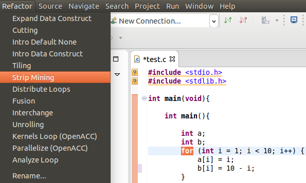
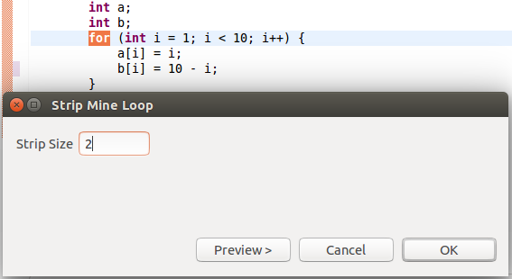
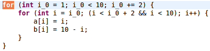

Description:
Turns a single loop into two loops such that the array is iterated over in the same order, but in multiple small strips.
Example:
- Select the desired for loop to be changed and choose StripMining under the Refactoring menu.

- Next you will be prompted for the size of the strip.

- The resulting for loop.

Use:
StripMine breaks down a loop for the purpose of being able to parallelize it.
Restrictions:
None